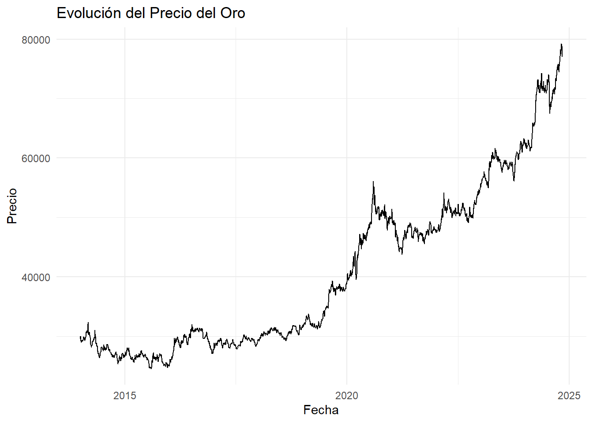
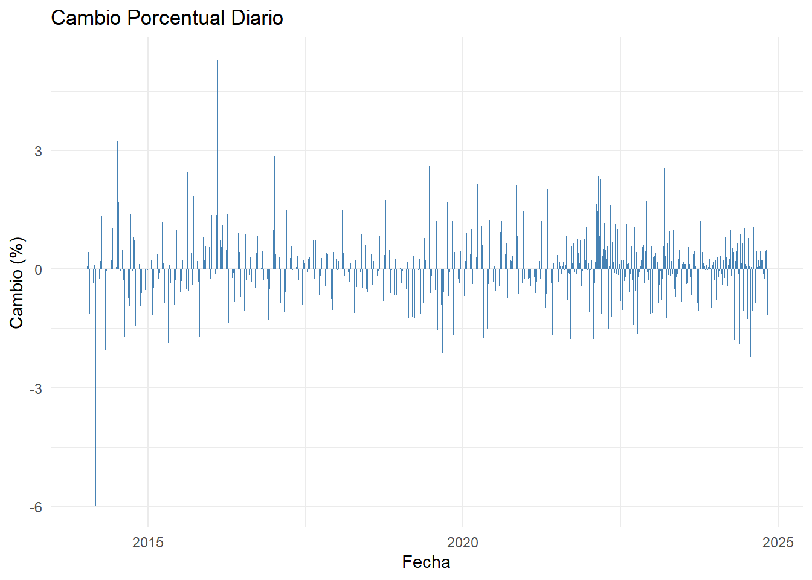
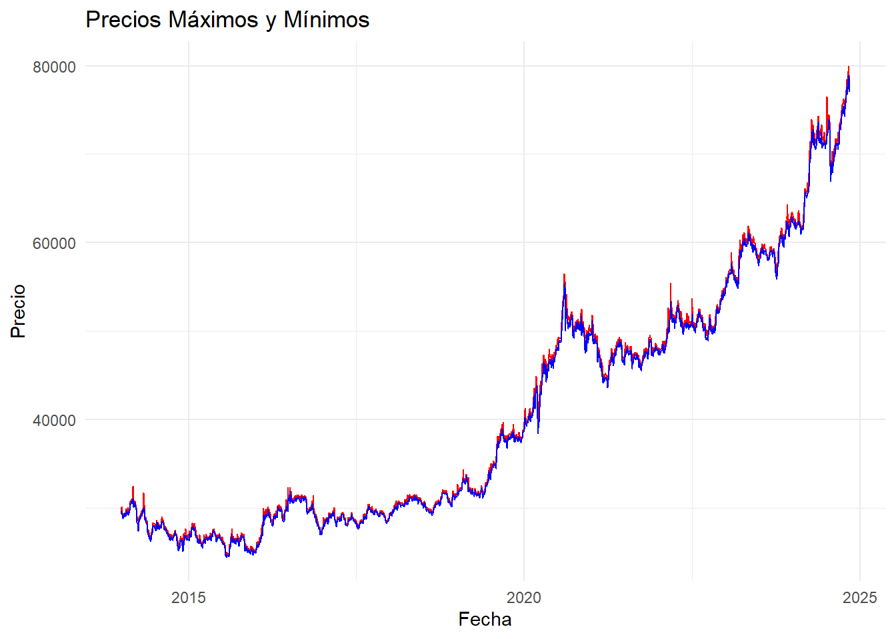
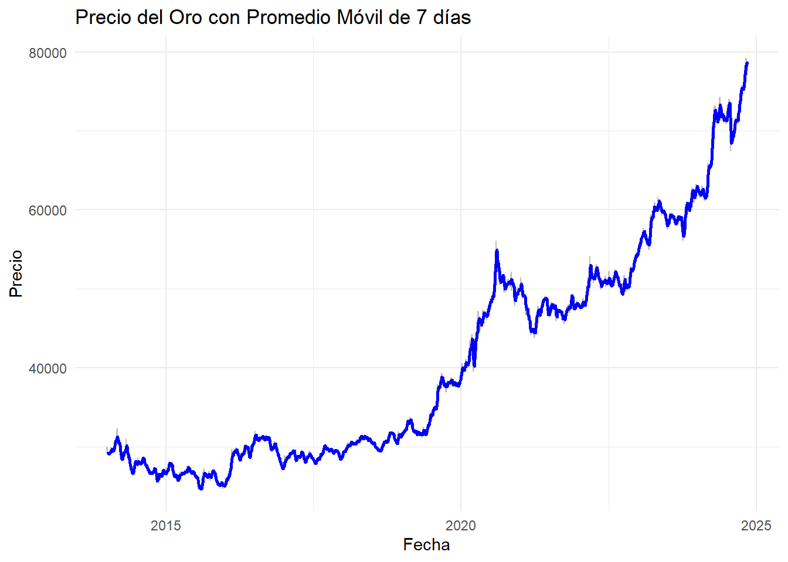
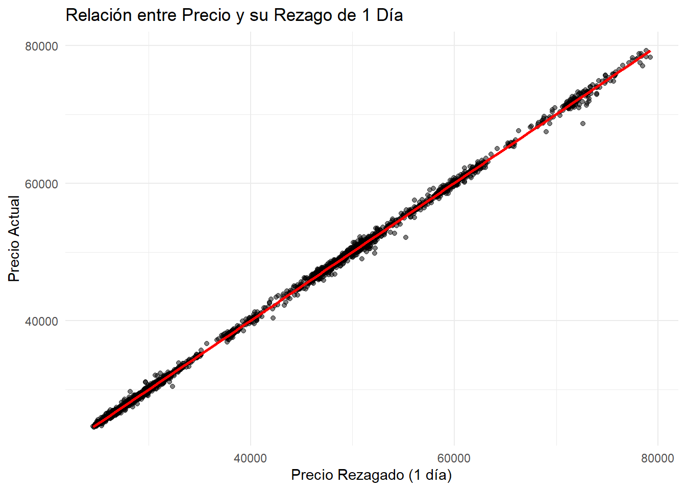
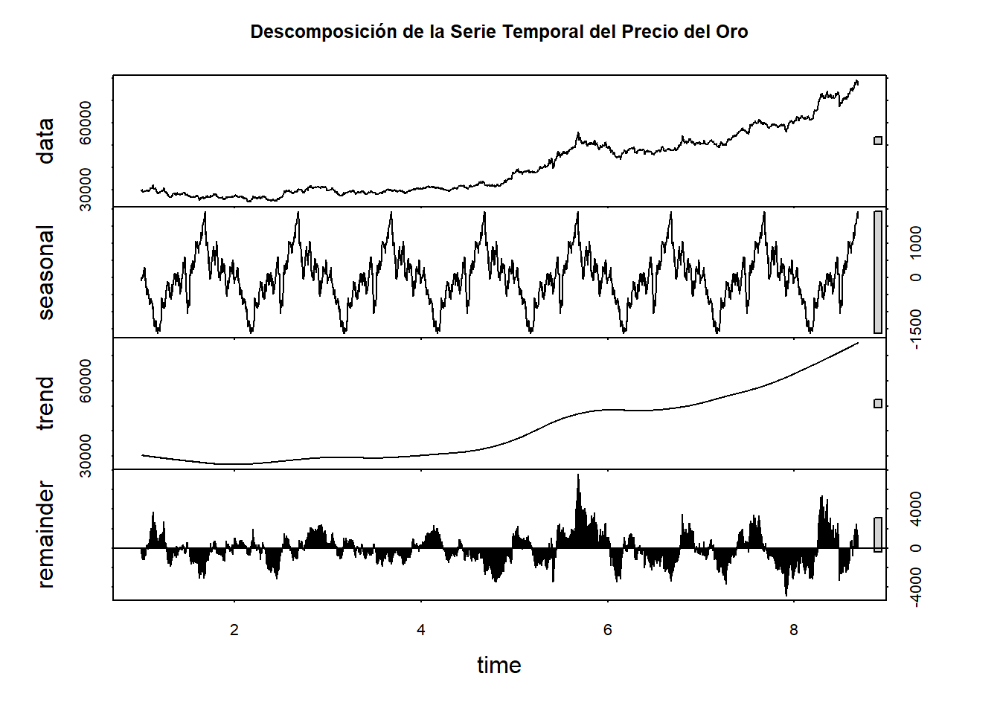
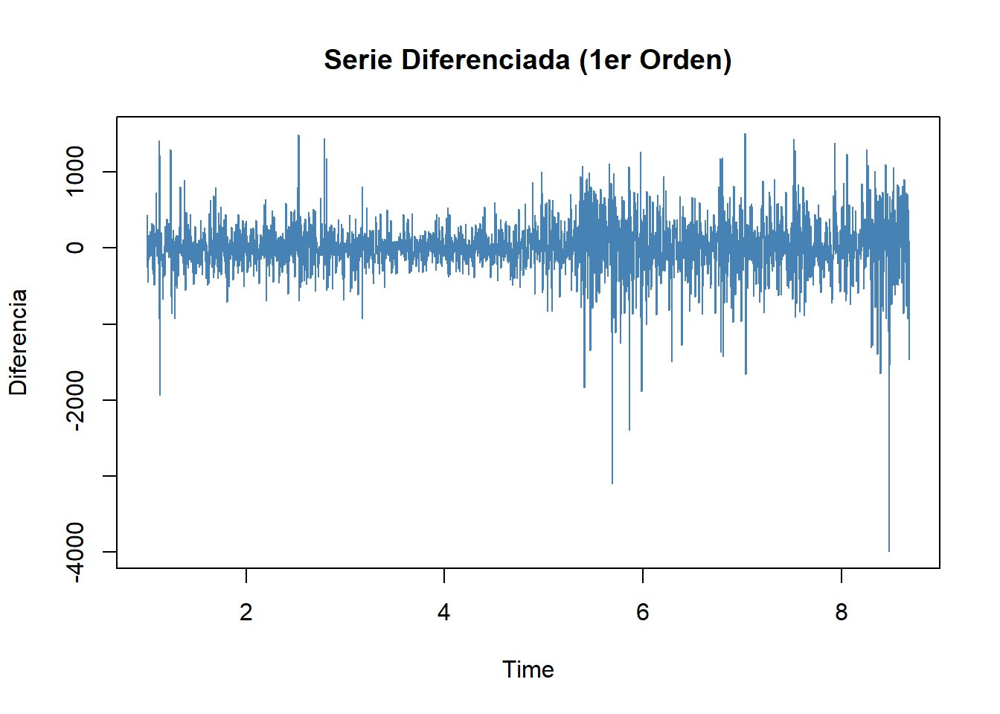
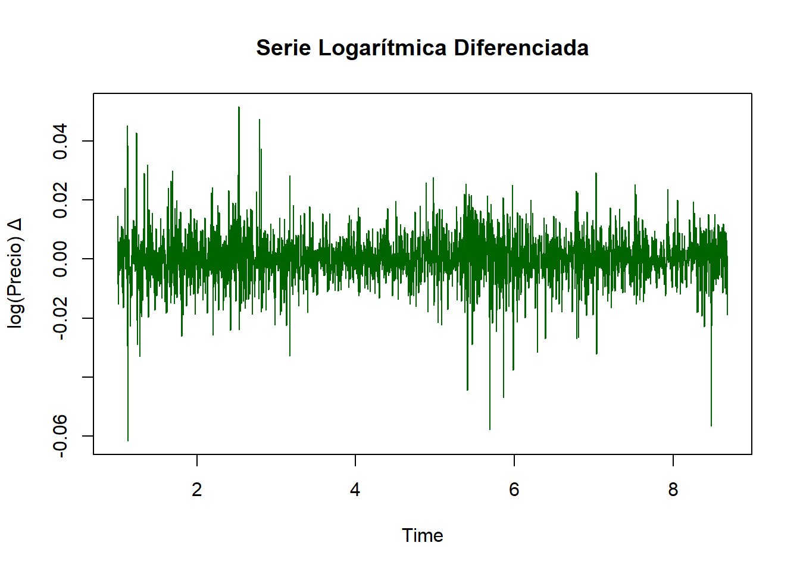
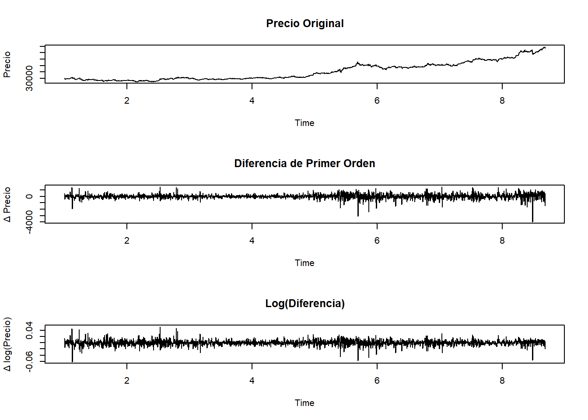

Chapter 4 Análisis Exploratorio de Datos
Se importa el dataset cuyos primeros registros se muestran a continuación.
# A tibble: 6 × 7
Date Price Open High Low Volume `Chg%`
<date> <dbl> <dbl> <dbl> <dbl> <dbl> <dbl>
1 2024-11-06 77030 78300 78570 77030 0 -1.86
2 2024-11-05 78490 78224 78670 78160 0 0.11
3 2024-11-04 78401 78498 78642 78237 0 -0.54
4 2024-11-01 78829 78650 78887 78550 0 0.64
5 2024-10-31 78326 79264 79999 77803 90 -1.17
6 2024-10-30 79257 79119 79375 78888 130 0.5 A continuación se presenta un resumen de medidas descriptivas.
| Name | datos |
| Number of rows | 2806 |
| Number of columns | 7 |
| _______________________ | |
| Column type frequency: | |
| Date | 1 |
| numeric | 6 |
| ________________________ | |
| Group variables | None |
Variable type: Date
| skim_variable | n_missing | complete_rate | min | max | median | n_unique |
|---|---|---|---|---|---|---|
| Date | 0 | 1 | 2014-01-01 | 2024-11-06 | 2019-05-27 | 2806 |
Variable type: numeric
| skim_variable | n_missing | complete_rate | mean | sd | p0 | p25 | p50 | p75 | p100 | hist |
|---|---|---|---|---|---|---|---|---|---|---|
| Price | 0 | 1 | 40699.89 | 13828.62 | 24545.00 | 29128.00 | 32980.00 | 50613.50 | 79257.0 | ▇▂▃▂▁ |
| Open | 0 | 1 | 40700.22 | 13826.94 | 24583.00 | 29103.75 | 33000.00 | 50646.75 | 79264.0 | ▇▂▃▂▁ |
| High | 0 | 1 | 40917.78 | 13900.47 | 24635.00 | 29261.25 | 33220.50 | 50911.25 | 79999.0 | ▇▂▃▂▁ |
| Low | 0 | 1 | 40482.31 | 13756.09 | 24470.00 | 28974.00 | 32890.00 | 50337.50 | 78888.0 | ▇▂▃▂▁ |
| Volume | 0 | 1 | 12529.58 | 10649.99 | 0.00 | 6282.50 | 10770.00 | 16397.50 | 106920.0 | ▇▁▁▁▁ |
| Chg% | 0 | 1 | 0.04 | 0.83 | -5.98 | -0.38 | 0.04 | 0.45 | 5.3 | ▁▁▇▁▁ |
Se explora la existencia de datos faltantes.
Date Price Open High Low Volume Chg%
0 0 0 0 0 0 0 Se realizan gráficos para observar tendencias a lo largo del tiempo de:
El precio 
Cambios porcentuales 
Comparación del valor máximo vs mínimos del día 
4.1 Análisis de promedio movil, rezagos y estacionalidad
4.1.1 Promedio móvil
Se agrega un promedio móvil de 7 días, es decir, de manera semanal ya que muchos mercados (como el oro, acciones, productos básicos) tienden a mostrar variaciones semanales (por factores como fin de semana, cierres de mercado, ciclos de noticias, etc.)

Se hacen las siguientes observaciones:
- La serie muestra una tendencia creciente de largo plazo, especialmente desde 2019 en adelante.
- 2013 - 2018: El precio del oro estuvo relativamente estable o ligeramente a la baja, con pequeñas fluctuaciones.
- 2019 - 2020: Se observa un fuerte crecimiento, con un aumento pronunciado en el precio.
- 2020 - 2021: Hay una corrección o caída parcial, después de un máximo.
- 2021 - 2025: Retoma una tendencia alcista constante con algunos ciclos de subida y bajada.
- Se identifican momentos donde la curva cambia de pendiente (subidas abruptas o correcciones), que pueden estar asociadas a eventos macroeconómicos.
4.1.2 Rezagos (lags)

Se realizan las siguientes observaciones:
- El precio del oro no cambia drásticamente de un día para otro; más bien tiende a seguir la misma trayectoria.
- Hay baja volatilidad diaria relativa (aunque a largo plazo se observaron tendencias importantes).
4.1.3 Estacionalidad

- En la primera porción de la gráfica, se observa el comportamiento de la variable precio a lo largo del tiempo.
- La segunda porción, Seasonal, muestra cómo varía sistemáticamente a lo largo del año.
- La tercera porción, muestra la Tendencia a largo plazo.
- Finalmente, se observa en la porción de Remainder el ruido no se explicado por la estacionalidad.
De la gráfica, se realizan las siguientes observaciones:
- Se aprecia claramente la tendencia creciente fuerte, especialmente desde el año 2020 en adelante.
- El componente estacional muestra ciclos repetitivos con una frecuencia regular de picos y valles aproximadamente cada año. La amplitud del patrón estacional es pequeña en comparación al nivel del precio.
Se verifica la estacionalidad.
Augmented Dickey-Fuller Test
data: serie_ts
Dickey-Fuller = -1.2393, Lag order = 14, p-value = 0.9002
alternative hypothesis: stationary- El ADF test evalúa la hipótesis nula de que una serie no es estacionaria (tiene raíz unitaria), frente a la hipótesis alternativa de que sí es estacionaria.
- Con un p-valor tan alto (0.9002), la evidencia estadística indica que la serie ts_price:
- No tiene media ni varianza constante en el tiempo.
- Tiene una tendencia persistente, como ya se vio en la descomposición STL.
- No es apta para modelado directo con ARIMA u otras técnicas que requieren estacionariedad, a menos que se transforme.
4.1.4 Diferenciación de primer orden

Prueba ADF tras la diferenciación:
Augmented Dickey-Fuller Test
data: ts_diff1
Dickey-Fuller = -15.197, Lag order = 14, p-value = 0.01
alternative hypothesis: stationary- p-value = 0.01: Significa que podemos rechazar la hipótesis nula de no estacionariedad.
- El estadístico Dickey-Fuller altamente negativo (-15.197) indica una fuerte evidencia de estacionariedad.
4.1.5 Transformación logarítmica + diferencia

- La serie resultante oscila en torno a cero, lo cual indica estacionariedad en media.
- No hay una tendencia visible: el promedio es constante.
- La dispersión (volatilidad) se ve bastante estable a lo largo del tiempo → varianza constante, o al menos más homogénea que la serie original.
- Hay algunos picos puntuales que pueden ser eventos de mercado extremos, pero no afectan la estructura general.
- La serie logarítmica diferenciada cumple con los requisitos clave de una serie estacionaria: media constante, varianza relativamente constante y ausencia de tendencia.
- Es altamente recomendable trabajar con esta serie transformada para fines de modelado, predicción o análisis estadístico.
ADF para log-diff:
Augmented Dickey-Fuller Test
data: ts_log_diff
Dickey-Fuller = -14.322, Lag order = 14, p-value = 0.01
alternative hypothesis: stationary- Se aplicó la transformación logarítmica y diferenciación de primer orden a la serie del precio del oro con el objetivo de controlar la tendencia creciente y la variabilidad no constante observadas en la serie original.
- La prueba de Dickey-Fuller aumentada aplicada a la serie transformada (diff(log(Precio))) arrojó un estadístico de -14.322 y un p-valor inferior a 0.01, lo cual permite rechazar la hipótesis nula de no estacionariedad.
- Por tanto, se concluye que la serie logarítmica diferenciada es estacionaria, lo cual justifica su uso en procesos de modelado como ARIMA, SARIMA o técnicas de pronóstico más avanzadas. Esta transformación también normaliza la escala de los cambios, permitiendo interpretar los resultados en términos de retornos porcentuales diarios.
4.1.6 Visualización comparativa

- La serie original del precio del oro presenta una tendencia creciente y varianza heterogénea, por lo que no cumple los requisitos de estacionariedad
- La diferenciación de primer orden elimina la tendencia, estabilizando la media pero no completamente la varianza.
- Al aplicar una transformación logarítmica seguida de una diferencia, se consigue una serie que oscila alrededor de cero y mantiene varianza aproximadamente constante.